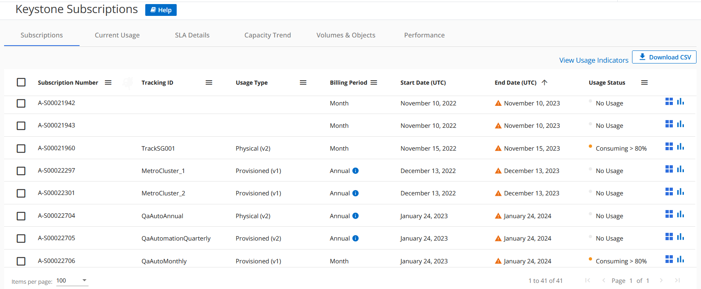
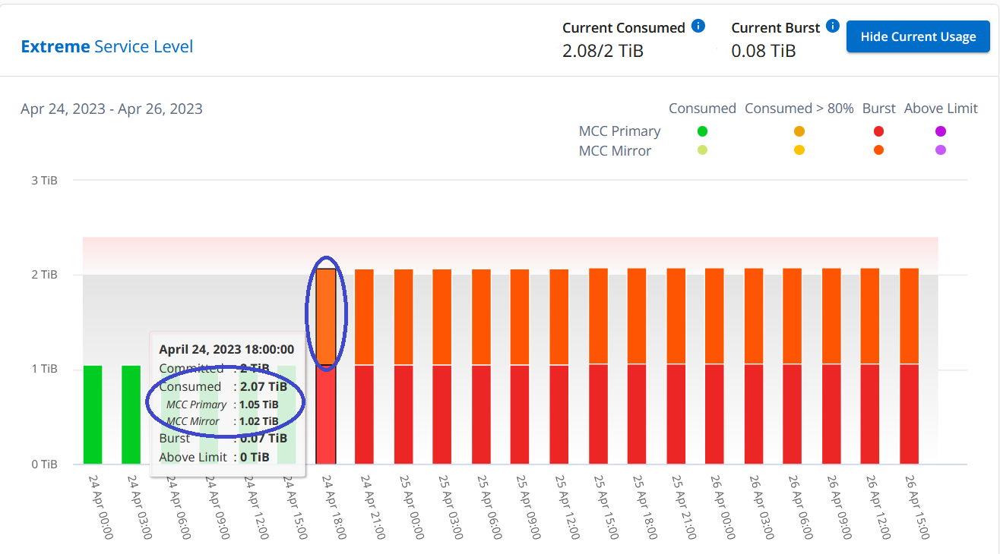

NetApp Keystone 서비스
NetApp Keystone 서비스
Keystone을 위한 Digital Advisor 대시보드 및 리포팅
 변경 제안
변경 제안
Active IQ 디지털 자문업체(디지털 자문업체) 대시보드는 NetApp Keystone 구독과 관련된 사용량을 모니터링하고 보고서를 생성하는 기능을 제공합니다. Keystone 서비스 가입 시 Digital Advisor 대시보드의 * Keystone 가입 * 위젯에서 구독 및 사용 세부 정보를 확인할 수 있습니다.

|
여기에서 제공되는 정보는 ONTAP 및 StorageGRID 모두에 적용됩니다. 관련 섹션에서 예외가 지적되었습니다. |
Keystone 디지털 자문 위젯에 대한 자세한 내용은 을 참조하십시오 "NetApp Keystone 서브스크립션을 통해 용량 활용도를 확인할 수 있습니다".
Keystone 가입 및 사용 세부 정보를 보려면 다음 단계를 수행하십시오.
-
Digital Advisor에 로그인합니다. 구매한 Keystone 서비스와 비교하여 용량 사용이 요약된 * Keystone 가입 * 위젯을 확인할 수 있습니다.
-
Keystone 구독 * 위젯에서 * 자세한 정보 보기 * 를 클릭하여 * Keystone 구독 * 페이지에서 볼륨에 대한 사용 세부 정보와 알림을 확인하십시오. 또는 왼쪽 탐색 창에서 * 일반 > Keystone 구독 * 으로 이동합니다.
서브스크립션 세부 정보, 각 서비스 수준에 대한 사용 차트 및 볼륨 세부 정보는 * Keystone 가입 * 화면의 여러 탭에 표시됩니다.
|
|
Keystone 서브스크립션의 용량 소비는 대시보드 및 보고서의 TiB에 표시되며 소수점 이하 두 자리까지 반올림됩니다. 사용률이 0.01TiB 미만이면 값이 로 표시됩니다 0 또는 No Usage. 이러한 화면의 데이터는 UTC 시간(서버 시간대)으로 표시됩니다. 쿼리에 날짜를 입력하면 UTC 시간으로 자동 간주됩니다.
|
사용 메트릭에 대한 자세한 내용은 을 참조하십시오 "서비스 수준 메트릭 및 정의". Keystone에서 사용되는 다양한 기능에 대한 자세한 내용은 을 참조하십시오 "Keystone 서비스 용량 정의".
구독
구독 * 탭에서 구독 목록을 볼 수 있습니다.

다음 정보를 볼 수 있습니다. 특정 필드 및 열의 경우 데이터에 대한 추가 정보를 제공하는 정보 또는 경고 아이콘 및 도구 설명이 표시될 수 있습니다.
-
* 구독 번호 *: NetApp에서 할당한 Keystone 가입 번호입니다.
-
* 추적 ID *: 가입 활성화 시 할당된 추적 ID입니다. 구독 추적에 사용되는 각 구독 및 사이트의 고유 ID입니다.

구독에 데이터 보호 서비스 수준 또는 요금 계획이 할당된 경우 MetroCluster 설정에서 파트너 구독의 추적 ID를 확인하는 데 도움이 되는 도구 설명이 표시됩니다. MetroCluster 구성에서 파트너 구독별 상세 소비량을 확인하는 방법은 을 참조하십시오 "데이터 보호에 대한 참조 차트". -
* 사용 유형 *: 여러 Keystone(버전 1) 또는 Keystone STaaS(버전 2) 구독했을 수 있습니다. 서비스 수준에 대한 요금 계획 규칙은 두 가지 구독 유형에 따라 다를 수 있습니다. 이 열의 값을 보면 사용 유형이 프로비저닝된 사용량에 따라 청구되는지 아니면 논리적 사용량에 따라 청구되는지 알 수 있습니다
v1또는v2. Keystone STaaS에 대한 자세한 내용은 를 참조하십시오 "Keystone STaaS 문서". -
* 청구 기간 *: 월, 분기 또는 연간과 같은 가입 청구 기간.
-
* 시작일 *: 가입일.
-
* 종료일 *: 가입 종료 날짜. 매달 자동으로 갱신되는 유료 구독이 있는 경우 이 표시됩니다
Month-on-month종료 날짜 대신 이 날짜를 기준으로 만료가 임박한 구독 또는 자동 갱신 정책이 연결된 구독에 대한 정보 메시지가 표시될 수 있습니다. -
* 사용 상태 *: 구독이 얼마나 많이 사용되었거나 초과 사용되었는지 나타냅니다. 최고 소비 레코드를 보려면 이 열을 기준으로 목록을 정렬할 수 있습니다.
-
 : 구독에 대해 이 아이콘을 클릭하면 해당 구독에 대한 추가 세부 정보가 있는 * Current Usage * 탭이 열립니다.
: 구독에 대해 이 아이콘을 클릭하면 해당 구독에 대한 추가 세부 정보가 있는 * Current Usage * 탭이 열립니다. -
 : 이 아이콘을 클릭하면 * Capacity Trend * 탭이 열리고 이 구독에 포함된 각 서비스 수준에 대한 사용 내역 데이터가 표시됩니다.
: 이 아이콘을 클릭하면 * Capacity Trend * 탭이 열리고 이 구독에 포함된 각 서비스 수준에 대한 사용 내역 데이터가 표시됩니다.
다음 사용 표시기를 참조하여 각 구독의 사용 상태를 확인할 수 있습니다.

 : 서비스 수준의 약정 용량에 대해 기록된 용량 사용량이 없습니다
: 서비스 수준의 약정 용량에 대해 기록된 용량 사용량이 없습니다
 : 소비는 정상이며, 약속된 용량의 80% 이내입니다
: 소비는 정상이며, 약속된 용량의 80% 이내입니다
 : 최대 소비, 즉 사용량이 약속된 용량의 100% 이상에 도달하려고 합니다. Consumed * (사용량 *) 열에는 커밋된 용량의 80%를 초과하는 소비에 대한 이 표시기가 표시됩니다
: 최대 소비, 즉 사용량이 약속된 용량의 100% 이상에 도달하려고 합니다. Consumed * (사용량 *) 열에는 커밋된 용량의 80%를 초과하는 소비에 대한 이 표시기가 표시됩니다
 : 소모량이 버스트 제한 내에 있습니다. 버스트 소비는 서비스 수준의 약정 용량 100%를 초과하는 소비량이며, 120%와 같이 합의된 최대 사용량 제한 내에 있는 소비입니다
: 소모량이 버스트 제한 내에 있습니다. 버스트 소비는 서비스 수준의 약정 용량 100%를 초과하는 소비량이며, 120%와 같이 합의된 최대 사용량 제한 내에 있는 소비입니다
 : 규정된 버스트 제한을 초과하는 소비를 나타냅니다
: 규정된 버스트 제한을 초과하는 소비를 나타냅니다
현재 사용량
구독에 대한 세부 정보를 확인하려면 * Current Usage * 탭을 클릭하고 필요한 구독 번호를 선택합니다.

서비스 수준 이름, 커밋됨, 소비됨, 사용 가능한 용량, 현재 및 계산된 버스트 사용률 등의 세부 정보는 TiB로 표시됩니다.
|
|
를 클릭합니다 |
Keystone 스토리지 서비스 및 관련 서비스 수준에 대한 자세한 내용은 를 참조하십시오 "서비스 레벨".
용량 추세
Capacity Trend * 탭에는 특정 기간 동안의 Keystone 구독에 대한 기간별 데이터가 표시됩니다. 수직 그래프에는 선택한 시간 범위의 사용 상세 정보와 보고서를 비교 및 생성할 수 있는 적절한 표시기가 표시됩니다.
-
Capacity Trend * 탭을 클릭합니다.
-
세부 정보를 보려는 필수 구독을 선택합니다. 기본적으로 계정 이름의 첫 번째 구독이 선택됩니다.
-
내역 데이터를 보고 용량 사용 추세를 분석하려면 * Capacity Trend * 를 선택합니다. 송장이 생성된 과거 버스트 사용량 데이터를 보려면 * 송장 발행된 버스트 * 를 선택합니다. 이 데이터를 사용하여 송장에 따라 청구된 사용량을 분석할 수 있습니다.
용량 추세를 봅니다
자세한 정보
Capacity Trend * 옵션을 선택한 경우 다음 단계를 수행합니다.
-
From Date * 및 * To Date * 필드의 달력 아이콘에서 시간 범위를 선택합니다. 쿼리의 날짜 범위를 선택합니다. 날짜 범위는 월 시작 날짜 또는 구독 시작 날짜부터 현재 날짜까지 또는 구독 종료 날짜일 수 있습니다. 미래 날짜는 선택할 수 없습니다.
최적의 성능과 사용자 환경을 위해 쿼리의 날짜 범위를 3개월로 제한합니다. -
세부 정보 보기 * 를 클릭합니다. 각 서비스 수준에 대한 구독의 과거 소비 데이터는 선택한 시간 범위를 기준으로 표시됩니다.
막대 차트에는 서비스 레벨 이름과 해당 서비스 레벨에 대해 사용된 용량이 날짜 범위에 표시됩니다. 컬렉션의 날짜 및 시간이 차트 아래쪽에 표시됩니다. 쿼리의 날짜 범위를 기반으로 사용 차트는 30개의 데이터 수집 지점 범위로 표시됩니다. 차트 위에 마우스 커서를 올려 놓으면 해당 데이터 수집 지점의 버스트 제한 데이터 위에서 사용량 분석을 확인할 수 있습니다.

막대 도표의 다음 색상은 서비스 수준 내에서 정의된 소비 용량을 나타냅니다. 차트의 월별 데이터는 세로 선으로 구분됩니다.
-
녹색: 80% 이내
-
황색: 80% - 100%.
-
빨간색: 버스트 사용량(약정된 버스트 한도에 대한 약속된 용량의 100%)
-
자주색: 버스트 제한 초과 또는
Above Limit.
|
|
빈 차트는 해당 데이터 수집 지점에 사용자 환경에서 사용할 수 있는 데이터가 없음을 나타냅니다. |
토글 단추 * 현재 사용량 표시 * 를 클릭하여 현재 청구 기간의 사용량, 버스트 사용량 및 누적 버스트 데이터를 볼 수 있습니다. 이러한 세부 정보는 쿼리의 날짜 범위를 기반으로 하지 않습니다.
-
* 현재 소비 *: 서비스 레벨에 정의된 사용된 용량(TiB)에 대한 표시기입니다. 이 필드에는 특정 색이 사용됩니다.
-
색상 없음: 버스트 또는 버스트 사용량 이상.
-
회색: 사용 안 함.
-
녹색: 약속된 용량의 80% 이내
-
황색: 의 80%가 버스트 용량에 커밋됩니다.
-
-
* 현재 버스트 *: 정의된 버스트 제한 내 또는 그 이상의 사용된 용량에 대한 표시기입니다. 합의된 최대 사용량(예: 약속된 용량을 20% 이상) 내에서 모든 사용량이 버스트 제한 내에 있습니다. 추가 사용은 버스트 제한을 초과하는 사용량으로 간주됩니다. 이 필드에는 특정 색상이 표시됩니다.
-
색상 없음: 버스트 사용량 없음.
-
빨간색: 버스트 사용량.
-
자주색: 버스트 제한 초과.
-
-
* 누적된 버스트 *: 현재 청구 기간 동안 매월 계산된 누적된 버스트 사용량 또는 소비된 용량에 대한 표시입니다. 누적 버스트 사용량은 서비스 수준에 대해 커밋된 용량과 사용된 용량을 기준으로 계산됩니다.
(consumed - committed)/365.25/12.
송장 발행된 누적 버스트 보기
자세한 정보
송장 발행된 버스트 * 옵션을 선택한 경우 기본적으로 청구된 마지막 12개월 동안의 월별 누적 버스트 사용량 데이터를 볼 수 있습니다. 지난 30개월까지의 날짜 범위를 기준으로 쿼리할 수 있습니다. 막대 차트는 송장 발행된 데이터에 대해 표시되며 사용량이 아직 청구되지 않은 경우 해당 월의 _Pending_이 표시됩니다.
|
|
송장 발행된 버스트 사용량은 서비스 수준의 커밋된 용량 및 사용된 용량을 기준으로 청구 기간별로 계산됩니다. |

이 기능은 미리 보기 전용 모드에서 사용할 수 있습니다. 이 기능에 대한 자세한 내용은 KSM에 문의하십시오.
데이터 보호에 대한 참조 차트
자세한 정보
데이터 보호 서비스를 구독한 경우 * 용량 추세 * 탭에서 MetroCluster 파트너 사이트의 소비 데이터 분할을 확인할 수 있습니다.
데이터 보호에 대한 자세한 내용은 을 참조하십시오 "데이터 보호".
ONTAP 스토리지 환경의 클러스터가 MetroCluster 설정으로 구성된 경우, Keystone 구독의 소비 데이터는 동일한 기록 데이터 차트로 분할되어 기본 서비스 수준에 대한 운영 및 미러링 사이트의 소비를 표시합니다.
|
|
소비 막대 차트는 기본 서비스 수준에 대해서만 분할됩니다. 데이터 보호 서비스 수준의 경우 이 경계가 나타나지 않습니다. |
데이터 보호 서비스 수준의 경우 총 소비량은 파트너 사이트 간에 분할되며, 각 파트너 사이트의 사용량은 별도의 구독으로 반영 및 청구됩니다. 즉, 기본 사이트의 구독과 미러 사이트의 구독이 각각 하나씩 포함됩니다. 그렇기 때문에 * Capacity Trend * 탭에서 운영 사이트의 구독 번호를 선택하면 DP 서비스 수준의 소비 차트에는 운영 사이트의 개별 소비 상세 정보만 표시됩니다. MetroCluster 구성의 각 파트너 사이트는 소스 및 미러 역할을 하기 때문에 각 사이트의 총 사용량에는 해당 사이트에서 생성된 소스 및 미러 볼륨이 포함됩니다.
|
|
현재 사용 * 탭에서 구독의 태킹 ID 옆에 있는 도구 설명을 통해 MetroCluster 설정에서 파트너 구독을 식별할 수 있습니다. |
기본 서비스 수준에서는 각 볼륨이 운영 사이트와 미러 사이트에서 프로비저닝된 것으로 충전되므로 운영 사이트와 미러 사이트의 사용량에 따라 동일한 막대 차트가 분할됩니다.
다음 이미지는 _Extreme_service 레벨(기본 서비스 레벨) 및 기본 서브스크립션 번호에 대한 차트를 표시합니다. 동일한 내역 데이터 차트는 기본 사이트에 사용된 색상 코드의 밝은 음영으로 미러 사이트 소비를 표시합니다. 마우스 포인터의 도구 설명은 운영 사이트와 미러 사이트의 소비 브레이크업(TiB)을 각각 1.02TiB와 1.05TiB로 표시합니다.

데이터 보호 Extreme_service 레벨(데이터 보호 서비스 레벨)의 경우 다음과 같은 차트가 나타납니다.

2차 구독을 확인하는 경우 파트너 사이트와 동일한 데이터 수집 지점에서 _Extreme_service 수준(기본 서비스 수준)의 막대 차트가 반전되고 1차 및 미러 사이트의 소비 중단은 각각 1.05TiB와 1.02TiB인 것을 확인할 수 있습니다.

데이터 보호 Extreme_service 레벨(데이터 보호 서비스 레벨)의 경우 차트는 파트너 사이트와 동일한 컬렉션 지점에서 다음과 같이 표시됩니다.

MetroCluster에서 데이터를 보호하는 방법에 대한 자세한 내용은 를 참조하십시오 "MetroCluster 데이터 보호 및 재해 복구 이해".
볼륨 및 개체
볼륨 및 개체 * 탭에서 ONTAP의 볼륨에 대한 사용 및 기타 세부 정보를 볼 수 있습니다. StorageGRID의 경우 이 탭에는 오브젝트 스토리지 환경의 노드 및 개별 사용량이 표시됩니다.
|
|
이 탭의 이름은 사이트의 배포 특성에 따라 다릅니다. 볼륨과 오브젝트 스토리지가 모두 있는 경우 * Volumes & Objects * 탭이 표시됩니다. 스토리지 환경에 볼륨만 있는 경우 이름이 * Volumes * 로 변경됩니다. 개체 저장소에만 * Objects * 탭이 표시됩니다. |
ONTAP 볼륨 세부 정보를 봅니다
자세한 정보
ONTAP의 경우 * 볼륨 * 탭에는 Keystone 구독으로 관리하는 스토리지 환경에서 볼륨의 용량 사용, 볼륨 유형, 클러스터, 애그리게이트 및 서비스 수준과 같은 정보가 표시됩니다.
-
볼륨 * 탭을 클릭합니다.
-
가입 번호를 선택합니다. 기본적으로 사용 가능한 첫 번째 구독 번호가 선택됩니다.
볼륨 세부 정보가 표시됩니다. 열 머리글 옆에 있는 정보 아이콘 위에 마우스를 올려 놓으면 열을 스크롤하여 해당 열에 대해 자세히 알아볼 수 있습니다. 열을 기준으로 정렬하고 목록을 필터링하여 특정 정보를 볼 수 있습니다.
데이터 보호 서비스의 경우 MetroCluster 구성에서 볼륨이 운영 볼륨인지 미러 볼륨인지를 나타내는 추가 열이 나타납니다. 노드 계열 복사 * 버튼을 클릭하여 개별 노드 일련 번호를 복사할 수 있습니다.

StorageGRID 노드 및 소비를 확인하십시오
자세한 정보
StorageGRID의 경우 이 탭에는 객체 스토리지에 대한 노드의 논리적 사용량이 표시됩니다.
-
Objects * 탭을 클릭합니다.
-
가입 번호를 선택합니다. 기본적으로 사용 가능한 첫 번째 구독 번호가 선택됩니다. 구독 번호를 선택하면 객체 스토리지 세부 정보에 대한 링크가 활성화됩니다.

-
링크를 클릭하여 각 노드의 노드 이름 및 논리적 사용 정보를 확인하십시오.

성능
성능 * 탭을 사용하면 Keystone 구독에서 관리하는 ONTAP 볼륨의 성능 메트릭을 볼 수 있습니다.
|
|
이 탭은 선택적으로 사용할 수 있습니다. 이 탭을 보려면 지원 부서에 문의하십시오. |
-
성능 * 탭을 클릭합니다.
-
가입 번호를 선택합니다. 기본적으로 첫 번째 가입 번호가 선택됩니다.
-
목록에서 필요한 볼륨 이름을 선택합니다.
또는 를 클릭할 수도 있습니다
이 탭으로 이동하려면 * 볼륨 * 탭의 ONTAP 볼륨에 아이콘을 클릭합니다. -
쿼리의 날짜 범위를 선택합니다. 날짜 범위는 월 시작 날짜 또는 구독 시작 날짜부터 현재 날짜까지 또는 구독 종료 날짜일 수 있습니다. 미래 날짜는 선택할 수 없습니다.
검색된 세부 정보는 각 서비스 수준에 대한 서비스 수준 목표를 기반으로 합니다. 예를 들어, 피크 IOPS, 최대 처리량, 목표 지연 시간 및 기타 메트릭은 서비스 수준에 대한 개별 설정에 따라 결정됩니다. 설정에 대한 자세한 내용은 을 참조하십시오 "서비스 레벨".
|
|
SLO Reference Line * 확인란을 선택하면 서비스 수준에 대한 서비스 수준 목표를 기반으로 IOPS, 처리량 및 지연 시간 그래프가 렌더링됩니다. 그렇지 않으면 실제 숫자로 표시됩니다. |
수평 그래프에 표시되는 성능 데이터는 5분 간격마다 평균이며 쿼리의 날짜 범위에 따라 정렬됩니다. 그래프를 스크롤하고 특정 데이터 포인트 위로 마우스를 가져가면 수집된 데이터로 드릴다운할 수 있습니다.
구독 번호, 볼륨 이름 및 선택한 날짜 범위의 조합을 기반으로 다음 섹션에서 성능 메트릭을 보고 비교할 수 있습니다. 세부 정보는 볼륨에 할당된 서비스 수준별로 표시됩니다. 클러스터 이름과 볼륨 유형, 즉 볼륨에 할당된 읽기 및 쓰기 권한을 볼 수 있습니다. 볼륨과 관련된 모든 경고 메시지도 표시됩니다.
IOPS/TiB
이 섹션에는 쿼리의 날짜 범위를 기반으로 볼륨 내 워크로드에 대한 입력 출력 그래프가 표시됩니다. 서비스 수준의 피크 IOPS와 현재 IOPS(쿼리의 날짜 범위가 아닌 마지막 5분 동안)가 해당 시간 범위에 대한 최소, 최대 및 평균 IOPS(IOPS/TiB)와 함께 표시됩니다.

처리량(MBps/TiB)
이 섹션에는 쿼리의 날짜 범위를 기반으로 볼륨의 워크로드에 대한 처리량 그래프가 표시됩니다. 서비스 수준의 최대 처리량(SLO Max) 및 현재 처리량(쿼리의 날짜 범위를 기준으로 하지 않고 최근 5분 이내)이 해당 시간 범위의 최소, 최대 및 평균 처리량(Mbps/TiB)과 함께 표시됩니다.

지연 시간(ms)
이 섹션에는 쿼리의 날짜 범위를 기반으로 볼륨 내 워크로드에 대한 지연 시간 그래프가 표시됩니다. 서비스 수준에 대한 최대 지연 시간(SLO 목표) 및 현재 지연 시간(쿼리의 날짜 범위를 기반으로 하지 않고 최근 5분 이내)이 시간 범위에 대한 최소, 최대 및 평균 대기 시간(밀리초)과 함께 표시됩니다.
이 그래프의 색상은 다음과 같습니다.
-
연한 파란색: _ 지연 시간 _. Keystone 서비스 이외의 지연 시간이 포함된 실제 지연 시간입니다. 여기에는 네트워크와 클라이언트 간에 발생하는 지연 시간과 같은 추가 지연 시간이 포함될 수 있습니다.
-
진한 파란색: _ 유효 지연 시간 _. 실제 지연 시간은 SLA와 관련하여 Keystone 서비스에만 적용되는 지연 시간입니다.

사용된 논리적 용량(TiB)
이 섹션에는 볼륨의 프로비저닝된 용량과 논리적 사용된 용량이 표시됩니다. 현재 논리적 사용된 용량(쿼리의 날짜 범위를 기준으로 하지 않음)과 해당 시간 범위에 대한 최소, 최대 및 평균 사용량이 TiB에 표시됩니다. 이 그래프에서 회색 영역은 커밋된 용량을 나타내고 노란색 그래프는 논리적 용도를 나타냅니다.

보고서를 생성합니다
CSV 다운로드 * 버튼을 클릭하면 각 탭에서 구독 세부 정보, 시간 범위의 사용 내역 데이터 및 볼륨 세부 정보에 대한 보고서를 생성하고 볼 수 있습니다. 
세부 정보는 나중에 사용할 수 있도록 저장할 수 있는 CSV 형식으로 생성됩니다.
Capacity Trend * 탭에서 쿼리 날짜 범위의 기본 데이터 수집 지점 30개 또는 일별 보고서에 대한 보고서를 다운로드할 수 있습니다.

그래픽 데이터가 변환되는 * Capacity Trend * 탭의 샘플 보고서:

알림을 봅니다
대시보드의 알림은 스토리지 환경에서 발생하는 문제를 파악할 수 있는 주의 메시지를 보냅니다.
경고는 다음 두 가지 유형이 될 수 있습니다.
-
* 정보 *: 가입 종료와 같은 문제의 경우 정보 경고를 볼 수 있습니다. 정보 아이콘 위에 커서를 올려 놓으면 문제에 대해 자세히 알아볼 수 있습니다.
-
* 경고 *: 규정 위반 등의 문제가 경고로 표시됩니다. 예를 들어, AQoS(적응형 QoS) 정책이 연결되지 않은 관리 클러스터 내에 볼륨이 있는 경우 경고 메시지가 표시됩니다. 경고 메시지의 링크를 클릭하면 * Volumes * 탭에서 비준수 볼륨 목록을 볼 수 있습니다.
단일 서비스 수준 또는 요금제에 가입한 경우 비준수 볼륨에 대한 알림을 볼 수 없습니다. AQoS 정책에 대한 자세한 내용은 을 참조하십시오 "청구 및 적응형 QoS 정책".

이러한 주의 및 경고 메시지에 대한 자세한 내용은 NetApp 지원 팀에 문의하십시오.